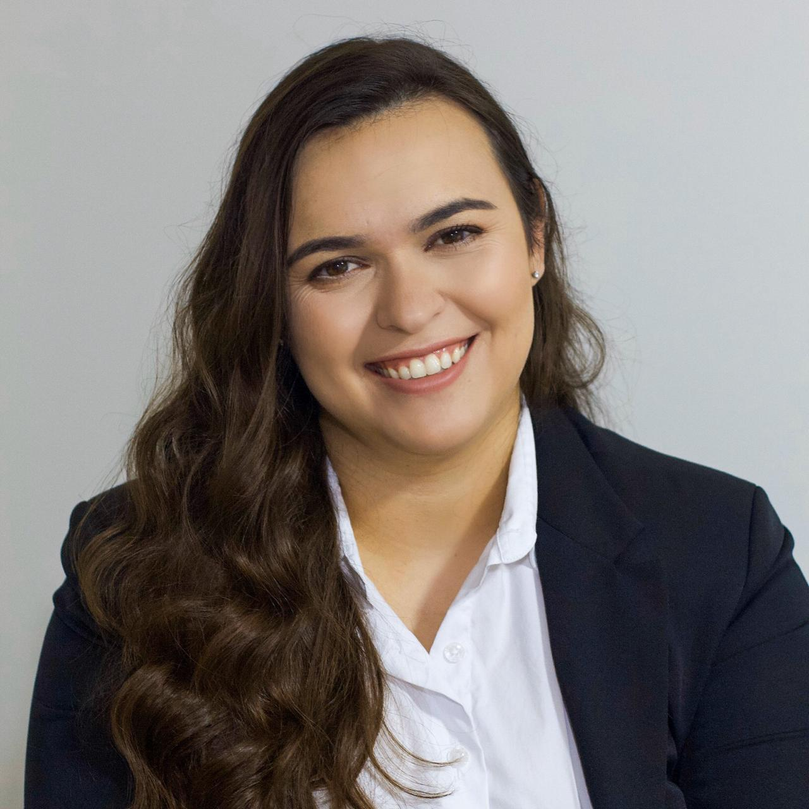

Quem Somos
Somos alunos de programas de pós-graduação dedicados a aprimorar nossas habilidades e conhecimentos para atuar em salas de aula. Nosso objetivo é promover inovação e compartilhar boas práticas educacionais por meio de tecnologias e metodologias avançadas. Cada integrante do grupo traz experiências e formações diversas, contribuindo para um projeto multidisciplinar e enriquecedor.
| Foto | Nome | Mini-Currículo | Link |
|---|---|---|---|
| Débora Danieli Pontarollo Gonçalves | Mestre pelo Programa de Pós-graduação em Ensino de Ciências e Tecnologia (UTFPR) campus Ponta Grossa... | Lattes | |
 |
Denize Luana Korzenievski | Graduada em Licenciatura em Pedagogia pela UEPG. Mestranda na UTFPR... | Lattes |
 |
Sabine Cassol | Tecnóloga em Análise e Desenvolvimento de Sistemas pela UTFPR... | Lattes |
|  | Tatiana Kolly Wasilewski Rodrigues | Professora de Proteção de Dados Pessoais e Direito Eleitoral Digital da PUCPR... | ORCID |